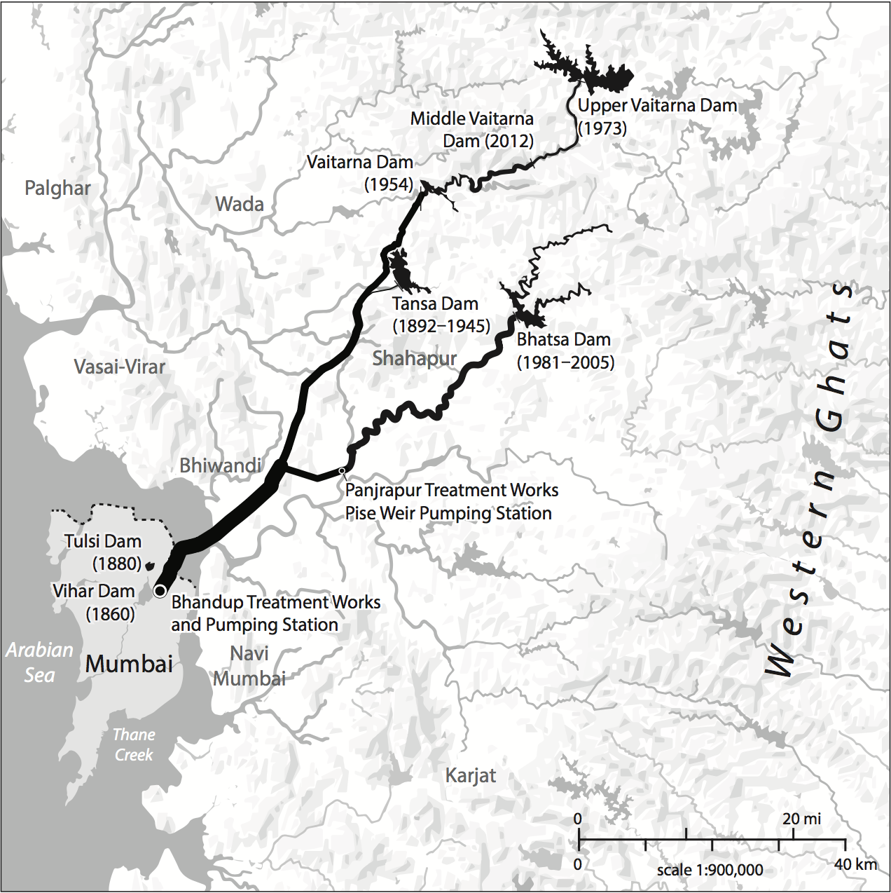
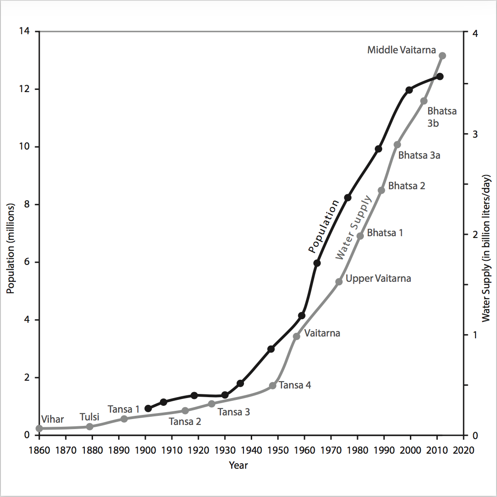
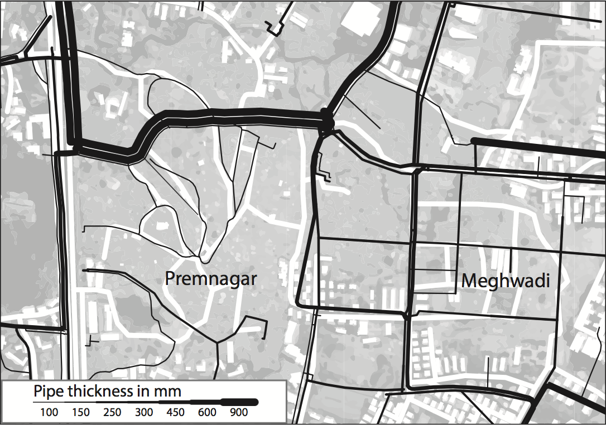

Freelance Cartography
Hydraulic City
  
2016. Compiled using QGIS and designed with Adobe Illustrator/Avenza MAPublisher.
I completed these maps and a line graph for Dr. Nikhil Anand and Duke University Press in early 2016; Hydraulic City: Water and the Infrastructures of Citizenship in Mumbai came out a year later in March, 2017. Learn more about the book by visiting DUP's page. Completion required gathering and digitizing data from a variety of sources provided by the author. Similar to previous maps and diagrams I've completed for Duke University Press, I had to develop sound visual hierarchies without the use of color.